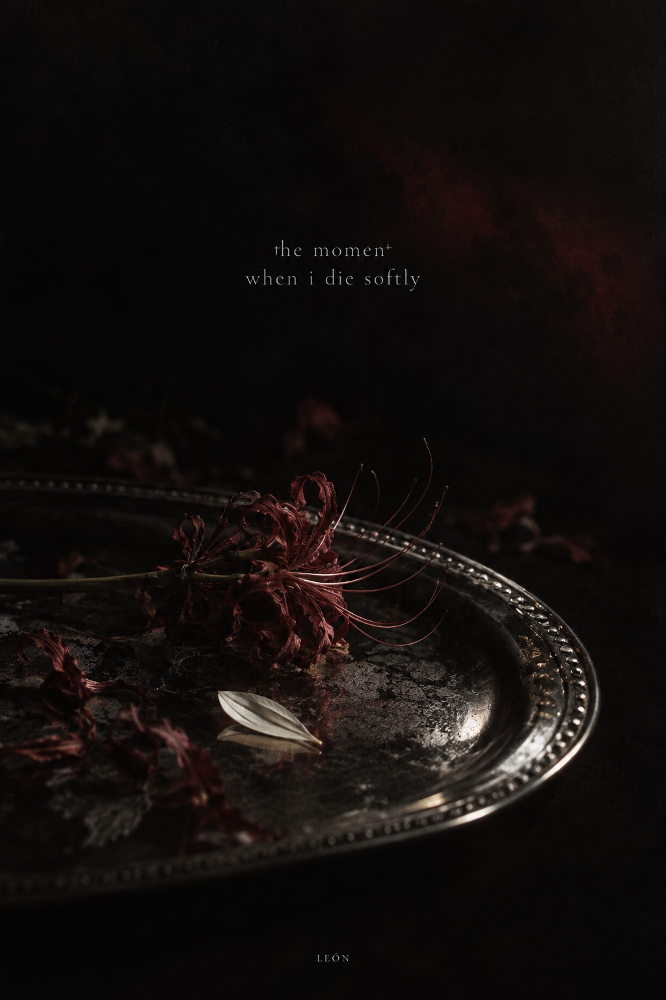
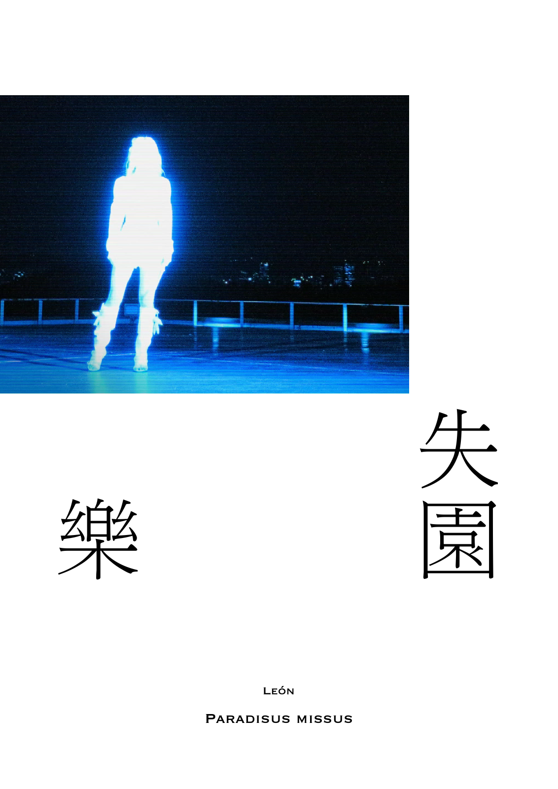

ART PROJECT
Selected projects / 04
the moment wheni die softly
(i know you're waiting for my death)

失樂園
PARADISUS MISSUS
[ Untitled ]
Work in progress
The PALACE
Architecture, nature, time

(i know you're waiting for my death)

PARADISUS MISSUS
Work in progress
Architecture, nature, time
León (Ma Haitong) is a bachelor student of BLCU who majors in Communication Studies.
That's all I have to say. If you want to know more, please explore.